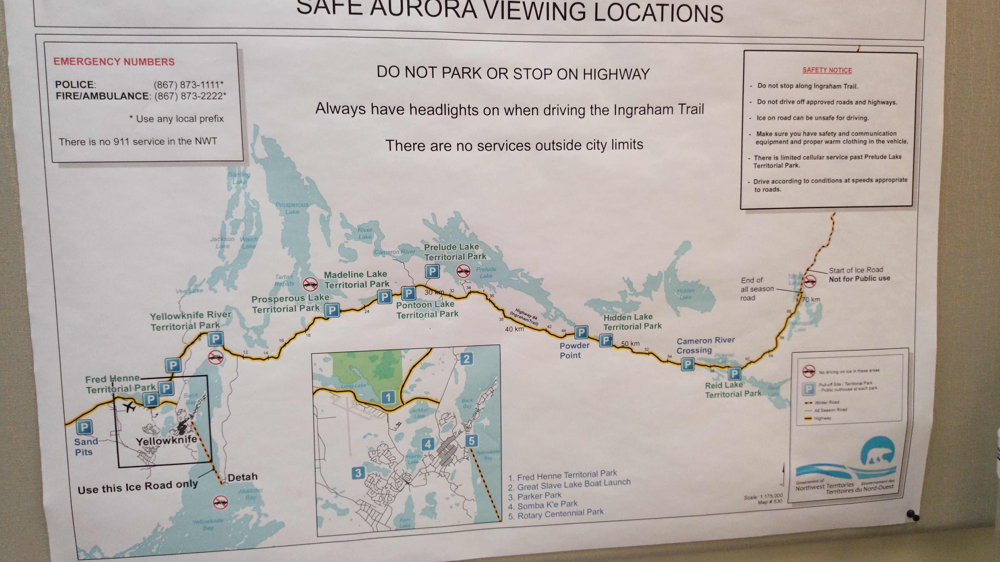
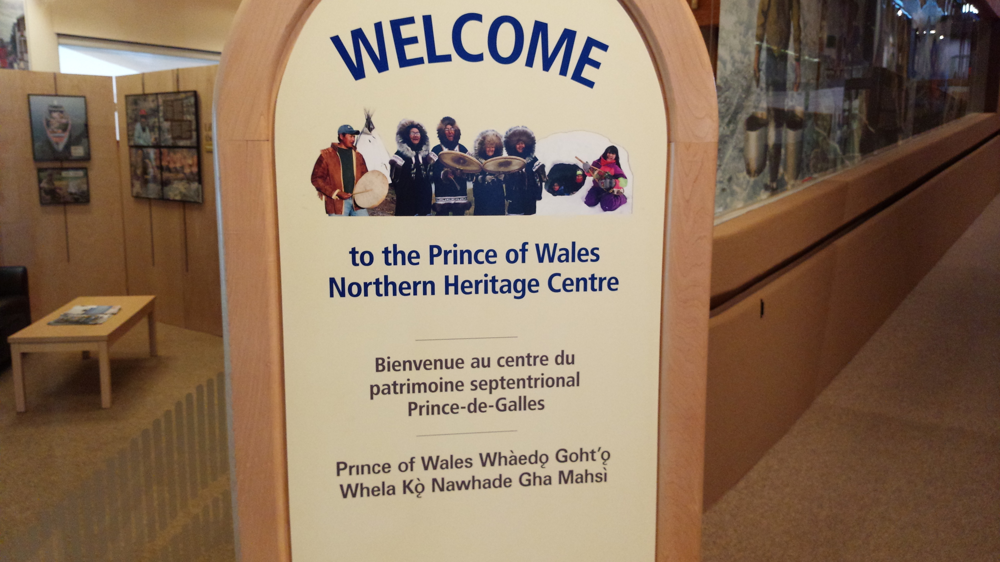
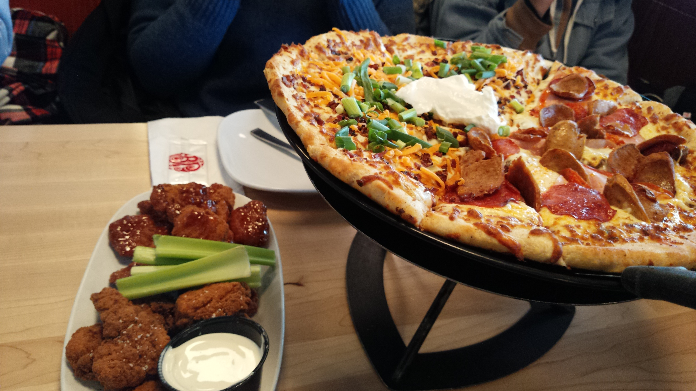
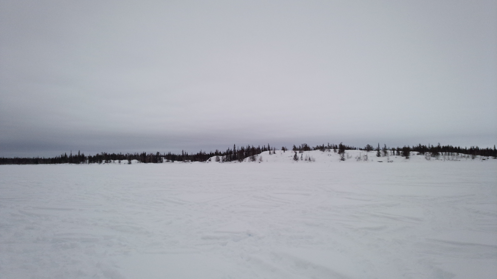
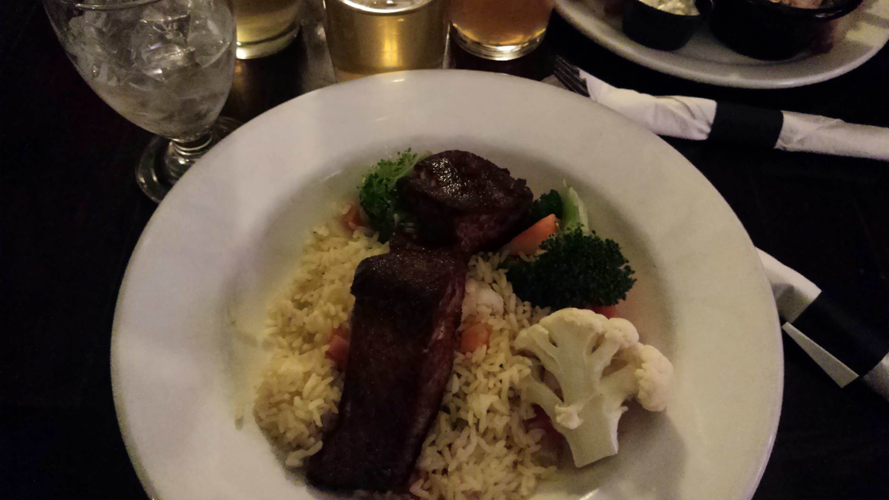

さてさて、ようやく#2でございます
午前中はYellowknifeの市役所みたいなところにある観光窓口に行ってオーロラについて聞いたり、その近くにあった博物館に行ってきた。
観光案内書に貼ってあった車用の地図
博物館の入り口の看板。英語、フランス語に並んで、カナダ先住民の言葉（多分）が書いてある。
カナダの先住民（カナダではFirst PeopleとかFirst nationsとか呼ばれている）の言語は60種類もあるらしい。
ビクトリアでは全く見かけないけど、北方であるYellowknifeではいたるところに書いてあった。
全部先住民語の新聞も売ってた。
その後ボストンピザで昼ご飯を食べた。ピザはいつどこで食べてもおいしい神の食べ物。
そして本日のメインイベント、スノーモービル体験！！
大型バイクくらいの大きさのスノーモービルに乗って広大な雪原（本当は凍った湖の上）を駆け巡った。
めちゃくちゃ楽しかったが、実はこの動画のあと少しハプニングがあった。
まず状況を説明すると自分たちは5人で、インストラクターの人も合わせて合計6人だった。
そしてスノーモービルは3台しかなかったから、それぞれに二人のって運転はかわるがわる行ってた。
雪原を走り、林を抜け、いよいよ本格的に人の気配が全くないところに着いたところで、3台のうち一台が深い雪によって座礁して動かなくなった。
でも一台のスノーモービルには二人までしか乗ることができないから、とりあえず二人を置いて四人で安全地点に戻ってから、二台のスノーモービルで残り二人を連れ帰ることになった。
だがしかし！！二台で残った二人のいる奥地に戻ってきて、さあやっと無事に帰れると思ったその時、二台のうち一台がエンジンの調子が悪くなって動かなくなってしまった。
ヤバス！！
川わたりパズルみたいな状況になってきたけど、仕方ないから一台を一人が運転して一人ひとり戻ることになった。
奥地にいるメンバーが自分と、女性二人と、インストラクターだった。
素人が下手な運転をして壊さないように、とりあえず運転する人はインストラクターに決まった。
そしたら残るは自分と女性二人である。
お分かりだと思うけど、自分が最後の一人になった。
一人、また一人と帰ってゆく。
そしてついにわしは誰もいない広大な雪原に一人になった。
気温こそ-30℃だけど幸い風もなく、来ている服も極寒仕様だったからコンディションは全然大丈夫だった。
むしろシティーボーイ（笑）である自分は自分を中心に半径数キロに人がいなくて、極寒の中にいるという状況が新鮮過ぎてむしろちょっと楽しかった。
ここでもまた、人間というのは本当に弱い存在だなあと感じた。
人類が必死で作ったスノーモビルはいとも簡単に雪で座礁するし。
まあそんなわけで無事みんな帰ってきた。
そして近くのパブで夜ご飯を食べた。
ご飯の上に蒸し野菜と魚が乗ってる料理だった。魚にまぶされてるスパイスがうまかった。
このあと夜中にオーロラを見に行ったけど、ものすごく弱くて肉眼で見えるか見えないかくらいのものだった。
そんな感じの二日目でした！！
{kind=link}
{kind=link}
{kind=link}
{kind=link}
{kind=link}